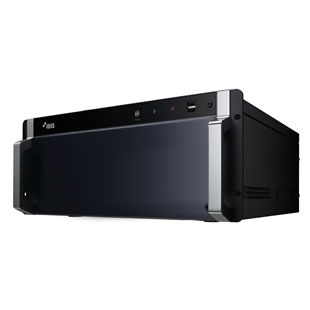

Device
SECURE
32ch画像解析ユニット/DV-2232
AI BOX DV-2232はIDLA(IDIS Deep Learning Analytics)をベースとしたビデオ分析ライセンスを実装しています。
IDLAは、セキュリティ・映像監視向けにIDIS社が独自に設計•開発した高度なAIエンジンです。
店舗、オフィス、工場、フィットネスジム、イベント会場など様々なシーンで活用いただけます。

商品の特長
コロナ感染防止対策サポート機能
長期化する新型コロナウイルス感染症対策として開発されたIDIS独自のソリューションです。新たな社会ルール、ガイドラインに対応できるよう既存の監視カメラの映像にディープラーニングによる高度なビデオ分析機能を追加することができます
＊人数カウント・入場モニタリング
＊ソーシャルディスタンス違反検出
＊マスク検出・マスクルール違反検出
＊混雑検出
Direct IP NVRをサポート
＊Direct IP NVRをサポート
＊32CH映像のリアルタイムによる画像解析
＊IDIS Deep-Learning Analytics (IDLA)を搭載
＊リアルタイムの混雑表示ダッシュボード
＊レポート機能
仕様
| システム | サポートデバイス | DirectIP NVR |
|---|---|---|
| ビデオ解析入力数 | 32ch | |
| サポートカメラプロトコル | DirectIP、DirectIP2.0 | |
| サポート圧縮方式 | H.265, H.264 | |
| ネットワーク | 2 x ギガビットイーサネット（1000Base-T） | |
| IDLA プロセッシングユニット | NVIDIA RTX2060, 8GB | |
| OS | Microsoft® Windows Embedded Standard 8 | |
| プロセッサ | Intel® i7-7700, 3.6GHz | |
| メモリ | DDR4 PC-19200, 8GB | |
| ビデオ出力 | 1 HDMI, 1 DP, 1 VGA | |
| USB | 4 x USB2.0、2 x USB3.0 | |
| 画像解析 | 人数カウントによる人数制限、ソーシャルディスタンス違反検出、マスクルール違反検出、混雑検出 | |
| 一般 | 外形寸法(mm) | 482 x 462 x 177 |
| 重量 | 14.0 kg | |
| 動作環境温度 | 0℃ ~ 40℃ | |
| 動作環境湿度 | 0% ~ 90% | |
| 電源 | AC100-240V, 50/60Hz, 5.5-2.5A | |
| 消費電力 | 350W | |
| 認証 | FCC , CE, CB, UL |